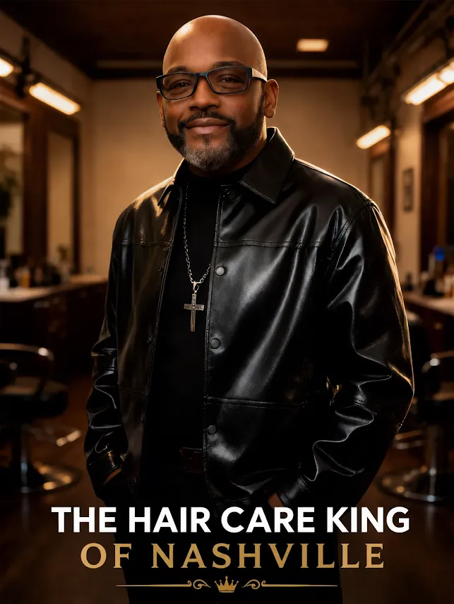
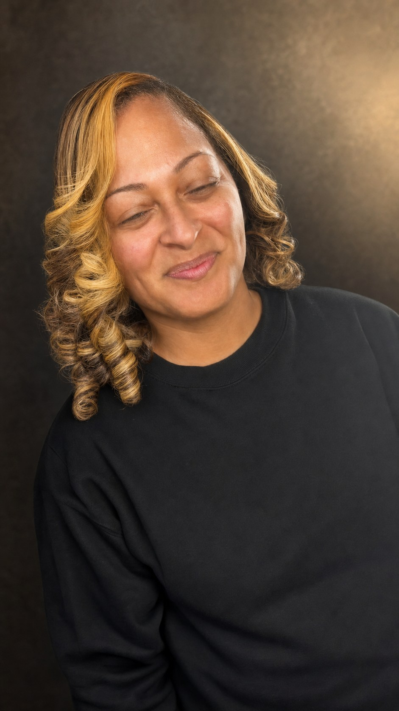
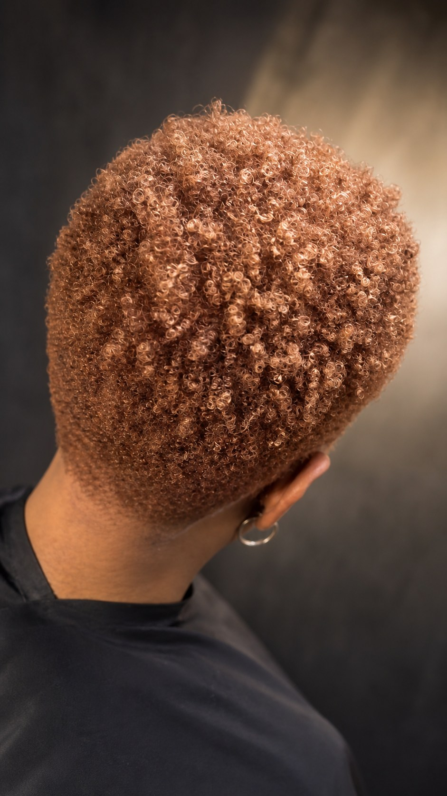
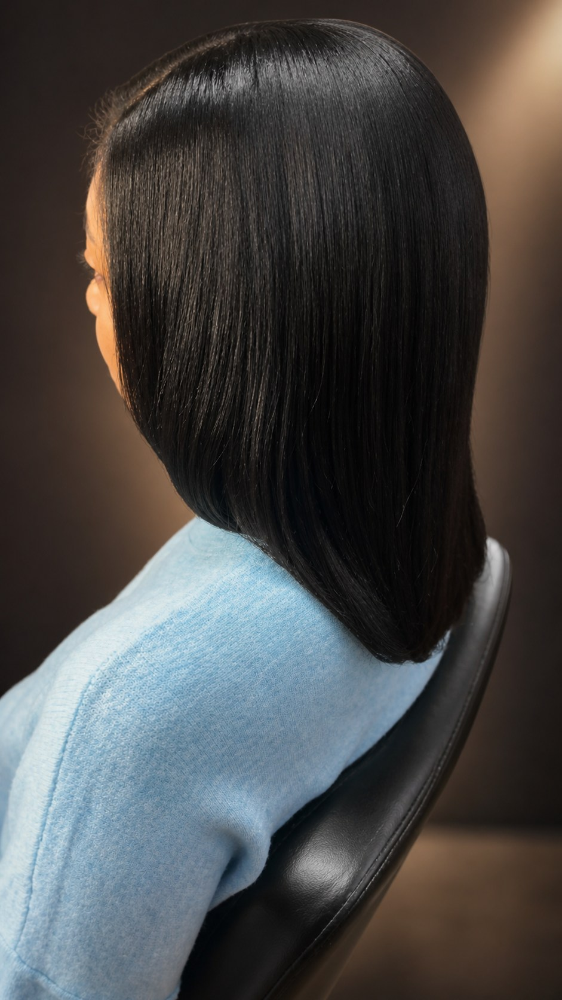

Choosing a wig during hair loss
A compassionate starting point for fit, comfort, construction, maintenance, and the questions worth bringing to a private consultation.
Read the guideNotes from behind the chair
Clear guidance for caring for your color, choosing a wig, and making your next salon decision with confidence.

A compassionate starting point for fit, comfort, construction, maintenance, and the questions worth bringing to a private consultation.
Read the guide
Why consultation, condition, undertone, testing, and a realistic maintenance plan matter.
Read the article ↗
See how Beverly's turns a salon visit into a complete camera-ready experience.
Explore The Reveal ↗Two notes from the chair
These are not one-size-fits-all rules. They are useful conversations to have with your stylist before the cape goes on.

Fashion tones evolve between visits. Ask what the color is likely to become and how to refresh it.

A polished finish should still move. Product choice and heat strategy matter as much as the final curl.
Bring Teddy the hair question you cannot answer from a thirty-second video.Consultation over guesswork